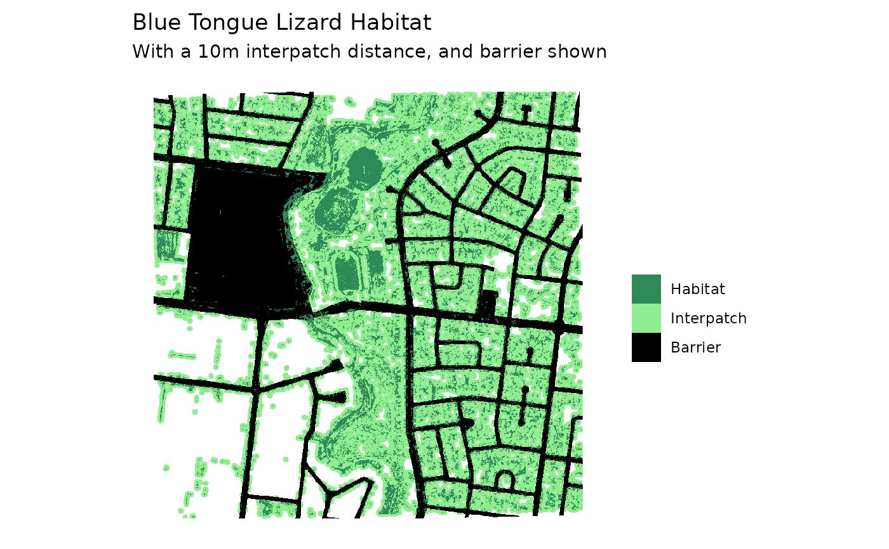
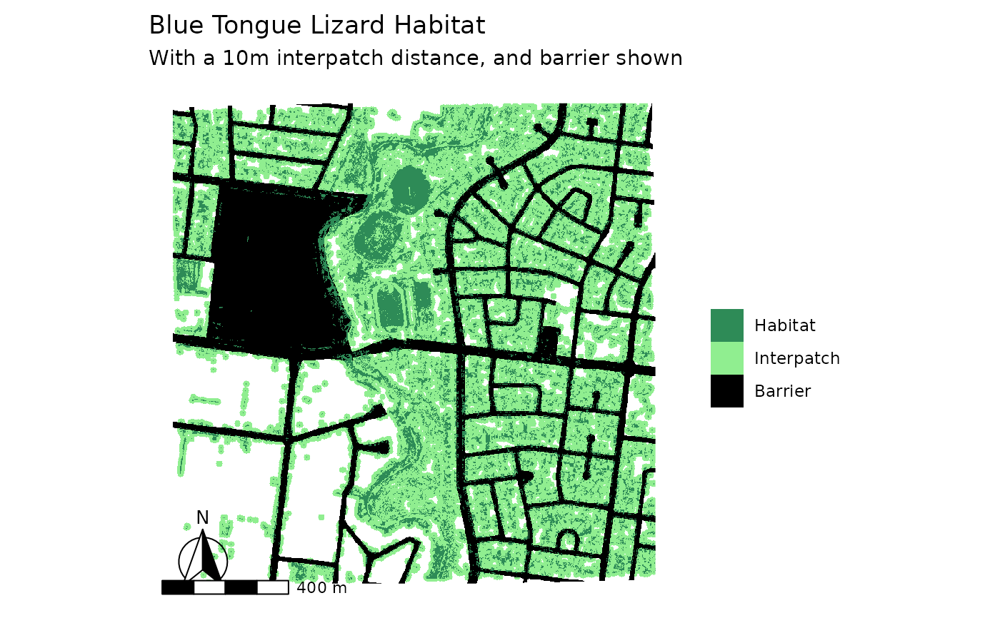

Plot barrier, habitat, and interpatch distance layers
Source:R/plots-summaries.R
gg_barrier_habitat_interpatch_dist.RdCreates a visualisation of habitat, interpatch distance zone, and barriers using terra rasters.
Usage
gg_barrier_habitat_interpatch_dist(
barrier,
buffered,
habitat,
interpatch_distance,
species,
col_barrier,
col_interpatch_dist,
col_habitat,
col_paper = NA
)Arguments
- barrier
Terra SpatRaster. Barrier layer (e.g., roads).
- buffered
Terra SpatRaster. Buffered habitat layer.
- habitat
Terra SpatRaster. Original habitat layer.
- interpatch_distance
Numeric. The distance (in meters) where habitat patches are considered connected. E.g., if set to 500, patches 498m apart are connected, those 501m apart are not connected. This is passed internally to a spatial operation known as "buffering", where this distance is used as a radius from the edge of the habitat zone. This means the specified
interpatch_distanceis halved exactly. So an interpatch distance of 500 will be converted to 250.- species
Character. Species name for plot title.
- col_barrier
Character. Color for barrier layer.
- col_interpatch_dist
Character. Color for interpatch distance zone.
- col_habitat
Character. Color for habitat patches.
- col_paper
Character. Background color (default: "white").
Examples
lizard_habitat <- example_habitat()
lizard_barrier <- example_barrier()
lizard_buffered <- habitat_buffer(lizard_habitat, buffer_radius =10)
gg_bar_hab_buf <- gg_barrier_habitat_interpatch_dist(
barrier = lizard_barrier,
buffered = lizard_buffered,
habitat = lizard_habitat,
interpatch_distance = 10,
species = "Blue Tongue Lizard",
col_barrier = "black",
col_interpatch_dist = "lightgreen",
col_habitat = "seagreen"
)
#> <SpatRaster> resampled to 500554 cells.
#> <SpatRaster> resampled to 500554 cells.
#> <SpatRaster> resampled to 500554 cells.
gg_bar_hab_buf

# add north arrow and scale bar with ggspatial
library(ggspatial)
library(tidyterra)
#>
#> Attaching package: ‘tidyterra’
#> The following object is masked from ‘package:stats’:
#>
#> filter
gg_bar_hab_buf +
annotation_north_arrow(
style = north_arrow_fancy_orienteering()
) +
annotation_scale()
